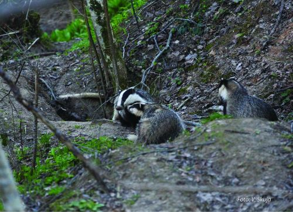

Vispārīgs raksturojums
Latvijā mugurkaulniekus pārstāv apaļmutnieki (Cyclostomata), kaulzivis (Pisces), abinieki (Amphibia), rāpuļi (Reptilia), putni (Aves) un zīdītāji (Mammalia). Latvijā nav sastopami evolucionāri senāki mugurkaulnieki – skrimšļzivis (Chondrichthyes), kā arī primitīvie hordaiņi – tunikāti (Tunicata), bezgalvaskausaiņi (Cephalochordata). Mugurkaulnieku sugu daudzveidība, salīdzinot ar bezmugurkaulniekiem, ir zema. Latvijā reģistrētas vairāk nekā 550 mugurkaulnieku sugas, tomēr patiesais skaits ir daudz mazāks. Sugu sarakstos parasti ietver visas jebkad reģistrētās sugas. Latvijas faunai nevar pieskaitīt introducētas sugas, piemēram, varavīksnes foreli (Oncorhynchus mykiss) vai retus ieceļotājus, piemēram, raibo grifu (Gyps rueppellii), kuri nav izveidojuši pastāvīgas populācijas. Mugurkaulnieku fauna kopš pēdējā apledojuma (pirms apmēram 14 000 gadu) pastāvīgi papildinās ar jaunām sugām. Sauszemei atbrīvojoties no ledus, pirmie ienācēji, visticamāk, bija aukstumizturīgi dzīvnieki, piemēram, ziemeļbriedis (Rangifer tarandus), savukārt ūdeņos – alata (Thymallus thymallus). Klimatam pasiltinoties, aukstumprasīgās sugas atkāpās uz ziemeļiem un ienāca nemorālā bioma sugas, piemēram, staltbriedis (Cervus elaphus), ķauķu dzimtas (Sylviidae) sugas. Domājams, ka visaktīvāk faunas bagātināšanās notikusi Atlantijas periodā apmēram pirms 5000–8000 gadiem, kad bija vissiltākais klimats. Tas bija optimālākais abinieku un rāpuļu ieceļošanas periods, arī ūdeņi bagātinājās ar karpveidīgo zivju (Cypriniformes) sugām un, iespējams, arī ar samu (Silurus glanis).
Informācija ņemta no:Nacionālās enciklopēdijas mājaslapas
Attēls ņemts no:Dabas muzeja mājaslapas